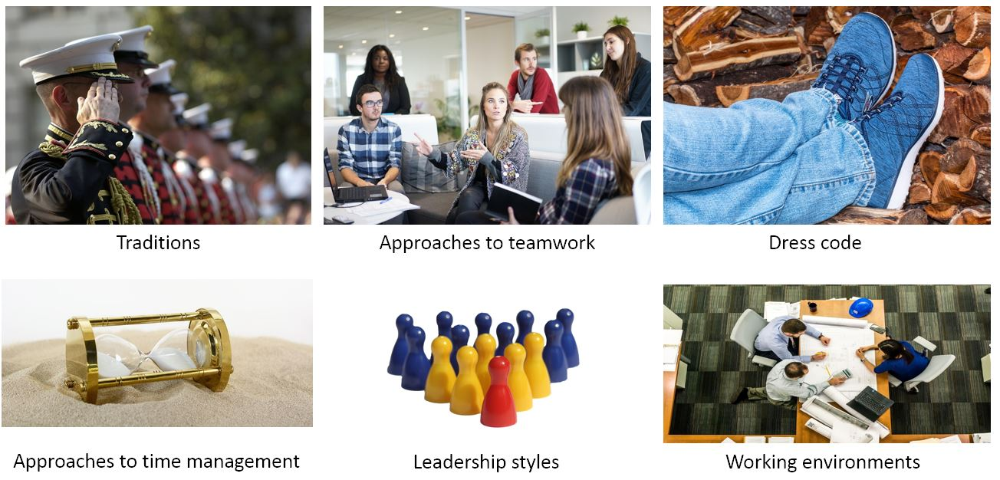

IB Docs (2) Team
IB Docs (2) Team

BMT 11 - Hofstede's cultural dimensions (HL only)

“Culture is the collective mental programming of the human mind by which one group of people distinguishes itself from another group.”
- Geert H. Hofstede (1928 - 2020), Dutch social psychologist
Watch this 60-second HSBC advert that highlights our ever-more globalized world, which suggests why understanding cultural dimensions across the world is so important for businesses.
What is culture?
Culture is often described as "the way things are done here". It refers to the way of doing things are done or how things are done within an organization, community, or country. Corporate culture refers to a set of beliefs and work attitude that is accepted in an organization. It can refer to the norms within an organization (such as the dress code within a business) and national or regional cultures (and how these impact on the organizational culture). Culture penetrates all aspects of Business Management, from how workers dress for work (business attire), to how budgets are set and which leadership style is dominant in an organization.
Essentially, culture influences everything in a business, from how meetings are conducted to how decisions are made. Culture influences individuals, and can be influenced by individuals.
Culture impacts all aspects of an organization. Essentially, culture is about:
People (relationships between employees and managers)
Processes (how things are done)
Policies (what is important to the organization), and
Past experiences (institutional knowledge).
National or regional culture is often described or explained using the 8 Fs:
Fables
Faiths
Famous people
Fashion
Festivals
Filmography
Flags
Foods
Flags are symbolic of national or regional cultures
In addition to these eight Fs, the historical context of the country is important to understanding culture, and how this impacts on businesses operating within the country. For example, French colonies have included parts of modern-day USA, Canada, Vietnam, Algeria, Congo, Mali, and Cameroon. Although French is not largely spoken in Vietnam any more, it is still one of the most widely spoken foreign languages in Vietnam as part of the legacy of colonial rule.
Similarly, cultural imperialism has impacted cultures in different areas of the world. This refers to one nation imposing its culture on another through political and/or economic influence. For example, Hong Kong was under British rule until 1997. Not surprisingly, perhaps, is that English is the official business language in Hong Kong, a special administrative region of the People's Republic of China.
Case Study 1 - Language and culture
Language refers to the aspect of a people’s culture that defines how they communicate. Language is rooted in culture, yet the ignorance of language and how it is used in different parts of the world can cause major confusion and havoc for businesses. For example, “Salut” in French can mean either “hello” or “goodbye”, depending on the circumstance. In Italy, the word "Ciao" is an informal salutation used for both "hello" and "goodbye".
Lost in translation?
A lack of understanding and appreciation can lead to branding errors for organizations trying to sell their products in international markets.
Bonka – Nestle brand of coffee
Big Nuts – chocolate bar from Cote D'or
Bimbo Sandwich – brand of bread from France
Complicated Cake – brand of Chinese cookies
Krapp – a Swedish brand of toilet paper
Looza – a soft drinks brand commonly found in vending machines in Luxembourg
Nightmare – a brand of pillows found in India
Pee Cola – soft drinks brand from Ghana
Pipi – Yugoslavian orangeade brand
Pocari Sweat – brand of Japanese energy drink
Topcon – a Japanese electronics manufacturer
WeePee – a Japanese child care centre
Zit – Greek soft drinks brand
Language, history, fables and culture are intertwined and can be difficult to understand for those ‘outside’ of the culture. For example, it was illegal in Paris for women to wear trousers for both personal and professional reasons. This law lasted for 214 years, coming to an end only in 2012. Chinese Mandarin is the most spoken language on the planet, although language does not always translate well from one place to another.
Hofstede's cultural dimensions
"How can there be peace without people understanding each other, and how can this be if they don't know each other?"
- Lester B Pearson, 1957, Canadian Prime Minister
Geert H. Hofstede’s cultural dimensions is a situational tool used by managers to understand the various aspects of cultures within and between organizations. It helps managers to recognize what motivates the workforce, how and why employees behave in the way they do, what they value, and how they make certain decisions.
This tool helps managers to understanding the cultural similarities and differences that exist between and across different countries. This helps them to determine more appropriate ways to conduct their operations given different national and international settings.
Hofstede’s research focused on managers and employees of IBM (the American technology corporation) across different parts of the world to investigate how different cultures may exist within the same organization. Hofstede developed his original model based on the results of a worldwide survey of IBM employees between 1967 and 1973. The data from his initial research covered more than 70 countries. This produced 4 cultural dimensions. He updated his model since, adding "long-term vs short-term orientation" following his subsequent research work in Hong Kong, and then "indulgence vs restraint" as the sixth cultural dimension in 2010. The DP Business Management syllabus focuses on all six cultural dimensions of Hofstede's model:
Power distance
Individualism vs collectivism
Masculinity vs femininity
Uncertainty avoidance
Long-term vs short-term orientation, and
Indulgence vs restraint
Understanding alternative cultural dimensions can enable a business to create marketing strategies that are specifically tailored to the cultural needs and preferences of its customers. The tool is particularly valuable for multinational companies with operations in different regions of the world, where cultural norms and values are different from those in the domestic country. It is also particularly important when people from different regions or countries are working together within the same organization.
Culture clashes and stakeholder conflicts can occur if managers do not understand cultural differences within and between organizations, so fail to plan and adapt their corporate strategies accordingly.
ATL Activity 3 (Research and Thinking skills)
Use the Hofstede Insight website to discover the six cultural dimension for the country you reside in as well up to three other countries of your choice/interest.
Are there any surprises and what might be the reasons behind these numbers?
Culture and Theory of Knowledge (TOK)
To what extent should culture drive business decision-making?
What role does change have on organizational culture?
To what extent might globalization be a threat to national and regional cultures, and does this really matter?
Given different cultural perspectives, are there any justifications for universal standards of ethical business behaviour?
Is there any aspect of business management for which culture does not have much or any significance?
Is a culture of change always beneficial to organizations?
ATL Activity 4 (Thinking skills) - French food culture & TOK
Most people would associate the French with food and drinks such as cheese, Champagne, croissants, French toast and perhaps French fries.
Whilst the French consume more cheese than any other one nation does, perception is not always reality. What do you think are the answers to the following questions?
1. What is Champagne?
Many people associate Champagne being a bubbly white wine. This is not entirely incorrect, but for a sparkling wine to be called Champagne, it must come from that specific region of France - called Champagne, in the northeast of France. Hence, there is technically no such thing as Champagne that comes from other wine producer nations such as Spain, Italy, New Zealand, Australia or China.
2. In which country did croissants originate from?
Again, many people associate the croissant with French culture and French cuisine, although the buttery and flaky pastry originates from Austria. The name comes from the infamous crescent shape of the pastry.
3. Did the French invent the French toast?
Historians claim that the dish we now know as French toast existed as early as the Roman Empire in the early 5th century AD. However, the man credited for inventing the modern-day French toast that we eat today is Joseph French, an entrepreneur from Albany, New York, back in 1724.
4. Were French fries invented in France?
No, they were created in neighbouring country Belgium. Historical records suggest that French fries were first made in Namur, Belgium, where the locals were particularly fond of fried fish. However, in 1680, when the River Meuse (which rises in France and flows through Belgium and the Netherlands) froze over so people fried potatoes instead of the small fish they were used to.
5. And finally, where does the word "France" originate from?
The answer is not France itself. Interestingly, the name France is technically not French. The word "France" comes from a Germanic tribe word "Frank", which means "free".
ATL Activity 5 (Thinking skills) - What does Hofstede tell us about Chinese culture?
Read this short article, from MarketMeChina.com, about what Hofstede's cultural dimensions reveals Chinese culture. The article covers five of the cultural dimensions: Power distance, Individualism/Collectivism, Masculinity/Femininity, Uncertainty avoidance, and Long-term/Short-term orientation.
To see the latest indices for China, covering all six of Hofstede's cultural dimensions, click the link here to access the Hofstede Insights webpage.
ATL Activity 6 (Research Skills) - Culture and Research & Development (R&D)
In the context of an organization of your choice, discuss how culture influences R&D practices. Be prepared to explain your findings to the class.
Teachers' Notes:
Innovative organizations such as Apple, Google, and 3M have an open and inclusive culture that encourages creativity and risk taking. By contrast, some organizations have a culture of leaving R&D to a team of experts. For example, McDonald’s R&D team is responsible for product development, so other employees have no input in this process.
In risk-adverse cultures, managers can be put off by the threat of failure, leading to financial losses and reduced staff morale. R&D expenditure can also be ignored, limited, or postponed in some organizations due to budgetary constraints.
Organizational culture can also be largely affected by national cultures - some countries are known for devoting a significant proportion of their resources to R&D and innovation, e.g., South Korea, USA, Japan, Sweden and the Netherlands.
In completing this task, it would be beneficial to ask students to also refer to the theories in Unit 2.5 Organizational (corporate) culture (HL only).
Case Study 2 - HSBC
HSBC is (still) renowned for its slogan "The World’s Local Bank". It has also used some outstanding television adverts to back this claim, which helps to highlight the importance of understanding culture when conducting business in other countries. Some examples are provided in the video clips below:
Driving etiquette in Germany and France: Watch this brilliant HSBC advert about the differences between German and French drivers.
The subtle advert shows a German man carefully driving his Mercedes Benz (German made), whilst the French driver is more casual about things driving his Peugeot (French made).
Eating etiquette in China and England: This video, also from HSBC, shows the importance of understanding business etiquette from a cultural perspective. It features a group of Chinese businessmen having dinner with an English client:
Finally, take a look at HSBC’s first advert as the bank launched it’s The World’s Local Bank marketing campaign in 2002:
ATL Activity 7 (Research skills) - Investigating international business etiquette
Etiquette refers to the protocol of acceptable behaviour in which business is conducted. It entails what society or an organization would deem to be good manners or polite behaviour. Investigate the importance of business etiquette for international marketers for a country of your choice.
For example, in China:
It is not wise to give your boss a green hat
It could be worse to give him/her a clock as a gift
Should you unwrap a gift in front of the person giving it to you?
Do you shake someone’s hand before a business meeting?
Why is the number 4 so unlucky?
Is it acceptable to be late for a business meeting?
Is it acceptable to use red ink in communications?
Why must you not place your chopsticks upright in your bowl at a dinner function?
The Chinese don’t have an actual word that translates as “Hello” – so what should you say instead?
You should aim to include application (relevance) of your findings to the real business world.
As an extension task, read this excellent Forbes article, titled :“27 Etiquette Rules For Our Times”.
Suggestion
Get students to present their findings in class and/or as posters for a classroom displays!
Teachers' notes - Culture and business etiquette
Some examples are provided below:
In Chinese culture, it is not wise to give clocks as a gift, as this signifies the recipient going into their after-life!
Similarly, you should not give a male Chinese colleague (especially your line manager) a green hat as a gift, as this suggests his wife is being unfaithful! St. Patrick’s Day would be rather interesting in China then!
In some Western cultures, the number 13 is unlucky. The number 4 is associated with death in Chinese and Japanese cultures. Hence, many commercial buildings such as hotels do not have a 13th or 4th floor (even though these physically exist, of course!)
In Japanese culture, gift wrapping is an art in itself. However, the colour white should be avoided for gift wrapping as this is symbolic of death!
In many cultures, it is the norm to firmly shake hands when greeting clients or colleagues. In other cultures, physical contact is best avoided.
It is common for Indians to greet you with a light slap on the shoulder. Women, however, may prefer the traditional Indian greeting of Namaste – which involves the joining of the palms, bringing them to the chest and then a slight bow of the head.
Indian people are remarkably flexible with their timing, whereas the Japanese and Germans frown upon lateness to meetings.
In Thailand, it is illegal to step on money.
In Norway, all diners are expected to use cutlery, even if this means eating a sandwich with a knife and fork.
In Russia, it is not a good idea to give someone yellow flowers, as this signifies infidelity or the end of a relationship.
The Japanese like to slurp soup and noodles, to indicate they are enjoying their food.
In Sri Lanka, it is regarded as rude to eat with your left hand.
In Chinese, Japanese and Indian cultures, do not insist on the host opening your gift as this is considered to be rude. Instead, gifts should be opened in private because this prevents any embarrassment for both parties.
Hindus typically follow a strict vegetarian diet, so business associates should be prepared for this (beef in particular is against their religion as cattle are considered to be sacred animals). Muslim clients do not eat pork (as pigs are considered to be unclean animals).
White flowers are often reserved for funerals in some cultures
A lack of awareness of and insensitivity to cultural differences in business etiquette can cause offence and harm business negotiations.
Video for review
This video provides an introduction to corporate culture at Airbnb, the recruitment process, and how employee hierarchy is established. There is also reference to motivation theories, linking culture with contents from Unit 2 of the Business Management syllabus:
ATL Activity 8 (Research and Self-management skills) - Hofstede's cultural dimensions in action
This activity has been suggested by Catherine Brandt
Professor Geert Hofstede was a famous social psychologist who proposed that there are different "Cultural Dimensions" within organizations and countries. Hofstede argued that understanding the different dimensions of culture will help facilitate better understanding and communication between cultures. This is important for both international diplomacy and international business.
Investigate how cultures differ in two different countries of your choice. Spend 10 minutes investigating. Information about the cultural dimensions in different countries can be found here.
Take a look at the three questions below and respond based on your understanding of Hofstede’s cultural dimensions.
You are a cultural psychologist who works for a large multinational company in Denmark. One of your colleagues has never travelled outside of his country but is about to move to South Korea for a promoted post in the company. In South Korea, he will be working as the senior manager of his division. What advice can you give him based on what we know about the dimensions of South Korean culture?
Max is Russian. He is coming to you as he and his colleague, who is from Thailand, are having difficulties working together. You wonder if there could be a cultural basis to their difficulties. What questions might you ask them based on what you know about their respective cultures (you will need to do some research on the cultural differences in Russia and Thailand).
An experienced Czech businesswoman has been offered the opportunity to work with one of three international businesses located in the centre of Prague. She is undecided about whether to accept the job offers from the American, French, or Russian companies. Based on her national cultural background, which business environment do you suggest that she would most easily adjust to? Be able to justify your recommendation.
Additional resources
The Business Journals – Why culture is important to businesses
Forbes magazine – Why corporate culture becoming ever more important, and the benefits of a strong corporate culture
LinkedIn – Why company culture is so important to business success
Talk Business – The importance of company culture and how to build a strong culture
Culture and International Mindedness
Culture: When in Rome, do as the Romans do
Culture and international mindedness as part of an IB education go hand-in-hand. Culture is integral to international mindedness (IM). Not only is IM integral to the philosophy of all IB World Schools, it is increasingly important in the corporate world. The IB’s definition of international mindedness is:
International mindedness is an attitude of openness to, and curiosity about, the world and different cultures. It is concerned with developing a deep understanding of the complexity, diversity and motives that underpin human actions and interactions.
Examples of content from the IB Business Management syllabus that allows for the exploration of culture are outlined in the box below (click on tab heading below).
To test your understanding of this topic, have a go at the following Flashcard revision tasks. There are 10 flashcards in this quiz - how many can you get right?
| (a) | Outline the meaning of Hofstede’s cultural dimensions. | [2 marks] |
| (b) | Explain two benefits for multinational companies that use Hofstede’s cultural dimensions as a situation tool. | [4 marks] |
| (c) | Explain two limitations for multinational companies that use Hofstede’s cultural dimensions as a situation tool. | [4 marks] |
Answers
(a) Outline the meaning of Hofstede’s cultural dimensions. [2 marks]
This situational tool helps managers to understanding the cultural similarities and differences that exist between and across different countries based on any one of six different cultural dimensions: (i) power distance, (ii) individualism vs collectivism, (iii) masculinity vs femininity, (iv) uncertainty avoidance, (v) long-term vs short-term orientation, and (vi) indulgence vs restraint. The tool can help businesses to overcome the cultural and geographical differences that lead to ineffective communication and misunderstandings between people from different nations and cultures.
Award [1 mark] for a response that shows some understanding of the tool.
Award [2 marks] for a response that shows good understanding of the tool, similar to the example above.
Note: for exam questions like this, there is no need to outline/include/name all elements of the tool - this has been included above for illustrative purposes only.
(b) Explain two benefits for multinational companies that use Hofstede’s cultural dimensions as a situation tool. [4 marks]
Possible benefits could include an explanation of:
Cultural norms play an important role in interpersonal relationships in the workplace and these vary from country to country. Managers of MNCs need to consider the feelings, reactions, and preferences of employees based on society’s cultural norms. This will help to improve morale and motivation, and hence positively impact on labour productivity and employee loyalty.
The tool can help MNCs to gain insight to how customers in a particular community might think and react to the firm's products, its services, and its marketing. Understanding varying cultural dimensions can therefore improve the efficiency of the MNC and improve its cash flow and budgeting.
Using Hofstede’s cultural dimensions model makes the unknowns of expanding and operating overseas less intimidating for the MNC. Hence, this can help managers to avoid costly mistakes, prevent embarrassment of offending others and their cultures, and give workers and managers a huge confidence boost when working in unfamiliar countries.
Accept any other valid advantage that is clearly explained.
Mark as a 2 + 2
For each point, award [1 mark] for a valid benefit and a further [1 mark] for an accurate explanation.
(c) Explain two limitations for multinational companies that use Hofstede’s cultural dimensions as a situation tool. [4 marks]
Possible benefits could include an explanation of:
Cultural generalizations - Although Hofstede's cultural dimensions offer valuable insights into cultural differences, it is important for MNCs to recognize that they are generalizations and may not apply to every individual or group within a culture, i.e., sub-cultures exist in every society and economy. Cultural diversity within a country or region can be complex, and relying solely on the model's cultural dimensions might oversimplify it.
The dynamic nature of culture - Culture is dynamic and changes over time. Hofstede's cultural dimensions were developed based on research from the 1960s and 1970s. However, societies have since experienced significant social, economic, and technological transformations (such as the significant impacts of articifical intelligence for MNCs). Thus, relying solely on these cultural dimensions may not capture the evolving dynamics and nuances of cultures in the modern corporate world.
Overemphasis on national culture - Hofstede's model focused on national cultures, assuming that cultural values are uniformly shared within a country. However, the migration of workers and the forces of globalization have increased cultural interactions and the rise of subcultures within nations. In today's interconnected world, MNCs often operate in diverse regional or local cultures that may differ from national cultural norms. Relying solely on national culture dimensions may overlook crucial cultural variations at a more localized level. Hence, MNCs need to recognise this limitation by integrating cultural dimensions with other tools., e.g., cross-cultural training and forming local partnerships.
Accept any other valid advantage that is clearly explained.
Mark as a 2 + 2
For each point, award [1 mark] for a valid limitation of the tool and a further [1 mark] for an accurate explanation.
Return to the Business Management Toolkit (BMT) homepage

 Twitter
Twitter
 Facebook
Facebook
 LinkedIn
LinkedIn